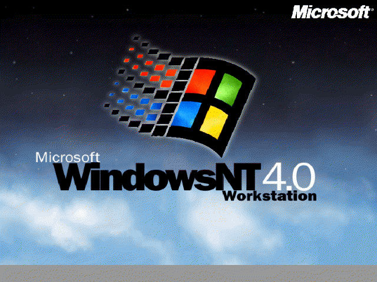

Windows NT 4.0

Wersja: Windows NT 4.0 Workstation
Data premiery: 29 lipca 1996
Architektura: 32-bit
Windows NT 4.0 to system, który połączył graficzny interfejs Windows 95 z potężnym jądrem NT. Był niezawodny, stabilny i... nie bardzo lubił gry. Idealny dla sieci, biura i wszędzie tam, gdzie "nie wolno było nacisnąć Alt+F4 bez zgody administratora". 😄
Data premiery: 29 lipca 1996
Architektura: 32-bit
Windows NT 4.0 to system, który połączył graficzny interfejs Windows 95 z potężnym jądrem NT. Był niezawodny, stabilny i... nie bardzo lubił gry. Idealny dla sieci, biura i wszędzie tam, gdzie "nie wolno było nacisnąć Alt+F4 bez zgody administratora". 😄

🔧 Wymagania sprzętowe
- Procesor: 486 lub lepszy
- Pamięć RAM: minimum 16 MB
- Dysk twardy: minimum 110 MB
- Karta graficzna: VGA lub lepsza
- Napęd CD-ROM lub stacja dyskietek
💽 Instrukcja instalacji
- Pobierz plik ISO klikając przycisk poniżej.
- Utwórz bootowalny nośnik lub uruchom ISO w maszynie wirtualnej.
- Przygotuj partycję i zainstaluj system z dyskietki setup/boot.
- Po instalacji zainstaluj Service Packi i sterowniki!